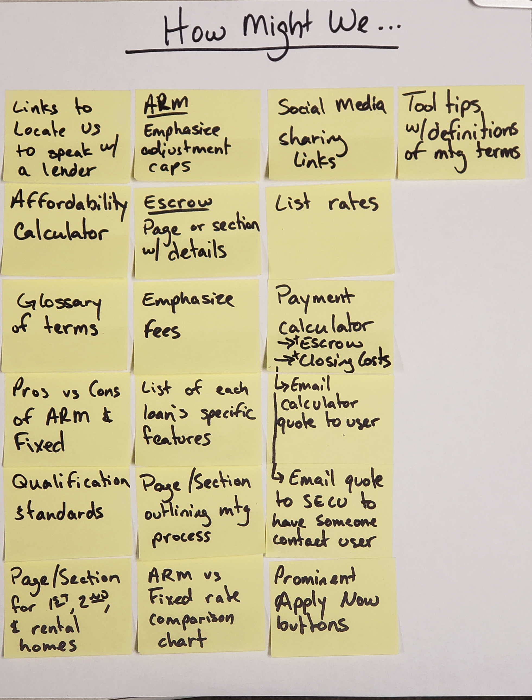
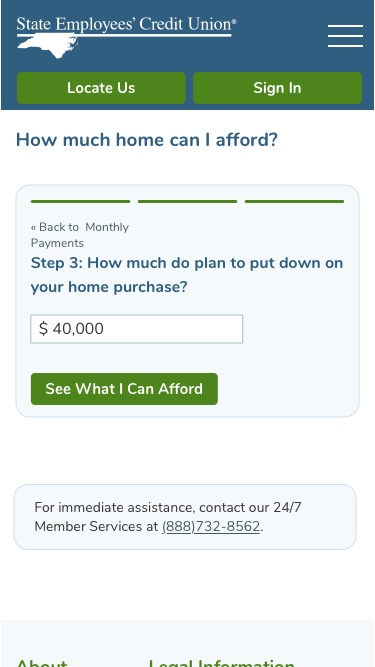

SECU Mortgages
SECU will be launching a new online feature allowing customers to more easily apply for and obtain a mortgage. The organization wants the information for mortgages on the marketing website to be improved in an effort to drive more traffic to the new mortgage origination feature.
A human-centered design approach was used to reimagine how mortgages are presented on the website. Users will be able to more easily find relevant information about the various mortgage products offered and then begin an application.
I served as the lead designer on the project. I led efforts to conduct research and usability testing that influenced the design. This project is currently in a review and finalization process before going live on the website.
SECU is concerned about liability exposures and limited how much I could contact potential users. I had to use online testing and research methods to get the information necessary to drive design decisions.
I wanted to gain insight into the information most relevant to customers as they shopped for mortgages. I contacted several mortgage lenders within the organization to discover commonly asked questions. I would have preferred to conduct interviews with some of SECU’s customers, but I had to resort to a survey to see what people similar to SECU’s membership base would want to know about a mortgage.
Initial Discovery Notes
Mortgage Searches
I also reviewed top mortgage related searches on the SECU website to gain more user insight.
The information from the lenders and the survey was analyzed to identify the most relevant and useful information. Some of the topics identified to be prioritized was identifying a suitable mortgage, estimating a potential payment, rates, and easily applying for a mortgage.
I used information from my research to begin generating ideas and creating low-fidelity wireframe sketches. Mortgage information on the website is currently organized by rate structure. There are pages for adjustable rates, fixed rates, and then a page for specialized mortgages like construction loans and mobile homes. A lot of the information on those pages are duplicated. I decided to consolidate the redundant information to a single page. Based on my research, I wanted to include a tool where users could identify the best mortgages for them as well as utilize a payment calculator. Rates for popular mortgage products also needed to be displayed. More unique and specialized information could be placed onto secondary pages easily navigated to from the main mortgage page.
How Might We...
Brainstorming ideas by asking "How Might We?"
Some Early Sketches
Once a rough design was in place, I began usability testing. I was not permitted to bring testers on site, so I utilized Maze.design for testing. I wanted to test the individual functional components separately and then test the whole design. I put each component through multiple rounds of testing and then used the feedback to make improvements.
Usability Testing
The concept presented for approval is based on using a central page with the most relevant information a user would need. There will be additional pages with more specific information.
The main page would present users with a strong call to action. Many users already know they want to apply for a mortgage and need this function to be found easily. The page will also feature a tool allowing users to input information about the home they need to finance and they will be given a list of appropriate mortgage options. Rates for SECU's most popular mortgage products will be displayed along with the ability to view additional rates or begin an application now. There is also a resource center that will direct the user to other mortgage topics such as a glossary and an affordability calculator. A FAQ section will conclude the main page.
Mortgages Page
-
A prominent call to action was placed at the top of the page allowing users to quickly and easily begin a mortgage application.
-
The "Find the right mortgage for you" tool gets input from the user and returns the best mortgage options.
-
Rates for the most popular mortgage products are displayed along with accompanying primary and secondary calls to action.
-
Users are able to find more information on different mortgage topics.
Initial discovery revealed that many people do not understand common terminology used with mortgages, so I decided to add a glossary of mortgage terms complete with a search function.
Glossary
A glossary with a search function will help users find and learn about mortgage terms.
Affordability is another concern of borrowers. I designed and tested a calculator that takes user input about their income and financial obligations. The calculator will output a monthly payment the borrower can afford and then a list of mortgages that may be of interest to the user.
Affordability Calculator
-

Users provide information about their financial situation.
-

An estimated monthly payment is returned along with appropriate mortgage options.
A project of this nature for a financial institution must go through several approvals before it can go live. That is where this project is currently. Verbiage on the pages is being reviewed and finalized by the lending and compliance departments. The review process can also alter the functionality of the design as upper management sees fit.
The biggest challenge of this project and many others is the limitations placed on designers in terms of contacting outside sources for interviews and testing. I was able to work around them using alternative methods.
The anticipated results of this design project will benefit both the organization and the users. The users will be able to more easily learn about and apply for mortgage products. The organization should see an increase in mortgages originated online.
View project prototype in Invision >